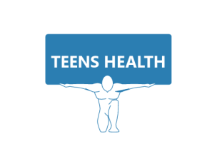

|  | Physical and Mental Health of Teens |
||
| Physical Health | Mental health | ||
|
|
|||
What is mental health?Mental health is a state of wellbeing. Good mental health means:
KEY FACTS
|
Interview about a teen talking to her mother about taking care of her body Interview of people talking about mental health |
||
| Back to top Needing help? Contact us 099 584 367 We are a goverment-funded service, providing quality, approved health information and advice |
|||